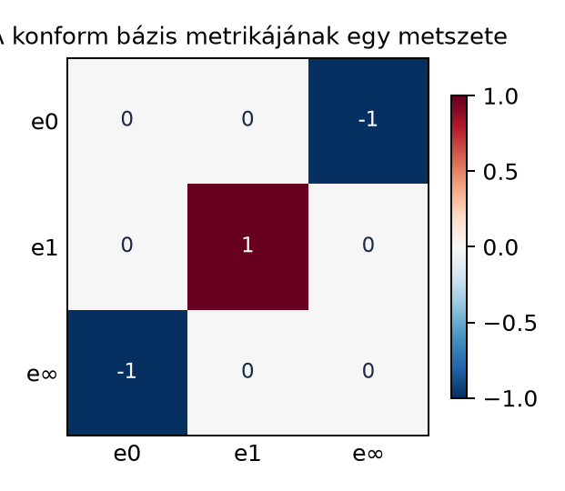
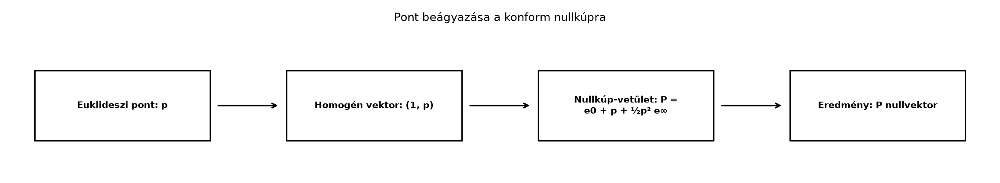

A homogén/projektív modellben – amelyet a Homogén
és projektív modell: pontok és egyenesek pengékként alfejezetben
építettünk fel – egyetlen extra dimenzió elegendő ahhoz, hogy az
eltolásokat lineáris leképezésként írjuk le. A projektív pontok skaláris
szorzata azonban nem adja vissza az euklideszi távolságot: ha a pontot
például
alakban tároljuk, akkor
ami nem a
és
távolságát méri.
A konform geometriai algebra (CGA) éppen ezt a hiányt pótolja. Két
extra dimenziót vezet be, és a pontokat egy nullkúpra helyezi úgy, hogy
a konform pontok skaláris szorzata a távolság négyzetével legyen
arányos. Ezáltal a távolságok, körök, gömbök és a későbbi mozgások is
természetes algebrai műveletekké válnak.
A Minkowski-szerű metrika gondolata már megjelent a Minkowski-tér és a γ-bázis alfejezetben: ott az
időtengely négyzete pozitív, a tértengelyeké negatív volt. A konform
modellben a két extra dimenzió által kifeszített sík szintén
pszeudo-euklideszi, míg az euklideszi irányok megtartják pozitív
metrikájukat.
21.2.2 Szemléletes kép
A konform modell metrikájának egy metszetét mutatja a következő
hőtérkép. A teljes kétdimenziós konform algebrában négy bázisvektorunk
van, de itt csak az
,
és
skaláris szorzatait tüntetjük fel;
ugyanúgy viselkedik, mint
.

A konform bázis metrikájának egy metszete
- Az e0, e1, e∞ vektorok skaláris szorzatai. A teljes 2D konform algebra
4D: e0, e1, e2, e∞; e2 ugyanúgy viselkedik, mint e1.
A beágyazás lépései folyamatábrán:

Pont beágyazása a konform nullkúpra - A p
euklideszi pontból homogén, majd konform vektort készítünk.
A hőtérkép fő üzenete:
,
,
de
.
Ez a két nullvektor tehát nem merőleges egymásra, hanem egy
Minkowski-szerű párt alkot.
21.2.3 Definíció: konform bázis és
metrika
Definíció (konform bázis). A kétdimenziós euklideszi
tér konform modelljében négy bázisvektorral dolgozunk:
A skaláris szorzatok a következők:
Az
neve origó, az
neve végtelen.
A háromdimenziós euklideszi térhez hasonlóan öt bázisvektorunk van:
,
ahol minden
.
21.2.4 Definíció:
pontbeágyazás
Definíció (konform pontbeágyazás). Legyen
egy euklideszi pont vektora a kétdimenziós síkban. A konform modellbeli
képe:
A
egy közönséges skalár, tehát
valóban vektor a konform algebrában.
Ez a képlet a homogén
vektor „nullkúpra vetítése”: a
tag éppen annyit ad hozzá, hogy a végeredmény nullvektor legyen.
21.2.5 Kidolgozott példa
Legyen
és
.
Ekkor
A konform pontok:
A különbségvektor:
így a távolság négyzete:
A
skaláris szorzatot kétféleképpen számoljuk ki. Először a metrika alapján
közvetlenül:
Másodszor a távolságképletből:
A két eredmény egyezik.
21.2.6 Tétel és bizonyítás: pontok
skalárszorzata és a távolság
Tétel (a konform pontok skalárszorzata). Legyen
és
az
és
euklideszi pontok konform beágyazása. Ekkor
Bizonyítás. Írjuk be a definíciót:
A skaláris szorzat disztributív, ezért
tagonként szorzunk. A tagokat csoportosítsuk aszerint, hogy melyik
bázisvektorok lépnek fel:
,
,
mert
merőleges minden
-re,
,
,
,
,
,
,
.
A nem nulla tagok a 3., 5. és 7. tagok, így:
A jobb oldal átírható:
Ezzel a tételt beláttuk.
21.2.7 Nullvektorok jelentése
A távolságképlet egyik fontos következménye, hogy minden beágyazott
pont nullvektor:
Tehát a közönséges euklideszi pontok a
konform tér nullkúpján helyezkednek el. Ez nem hiba, hanem a modell
lényege: a nullkúp elegendően nagy ahhoz, hogy minden euklideszi pontot
tároljon, és a rajta mért skaláris szorzat éppen a távolságot adja.
Az
vektor az origó beágyazott képe, hiszen
esetén
.
Az
vektor a végtelen távoli pont irányát reprezentálja: ha
hossza nagyon nagy, a beágyazásban a
tag egyre dominánsabb, így a pont „tart”
-hez.
Az
önmagában nem beágyazott euklideszi pont, hanem a projektív határpont
szerepét tölti be.
21.2.8 Jelölési konvenciók
forrásonként
A szakirodalomban a konform modell jelölésrendszere nem egységes.
Egyes források az origót
-nak,
a végtelent
-nek
vagy
-nek
nevezik; mások az
helyett
-t,
az
helyett
-t
használnak. Az is eltér, hogy az
értéke
vagy
.
Ez a könyv az
jelölést és az
konvenciót követi. Ennek következménye,
hogy a távolságképletben negatív előjel szerepel. Más konvenciójú
forrásoknál a
képlet előjele pozitív lehet. Külső könyvtárak és cikkek használatakor
ezért mindig ellenőrizni kell a metrika előjelét.
21.2.9 Tipikus hibák és
félreértések
A konform pont és az euklideszi vektor
összekeverése. A
konform pont nullvektor, az
euklideszi vektor hossza viszont általában nem nulla. A
képlete három tagból áll, és a
csak az egyik összetevő.
Az
és
nullvektor, de nem merőlegesek. Abból, hogy
és
,
sokan azt gondolják, hogy minden skaláris szorzatuk nulla. Valójában
,
ezért a kereszttagok nem tűnnek el.
Előjelhiba a távolságképletben. Ha valaki más
konvenciót követ, a
értéke
is lehet. A könyvben a
-es
alak az irányadó.
A
együttható elhagyása. A nullkúpra vetítéshez pontosan a
tag szükséges; enélkül a
nem lenne nullvektor, és a távolságképlet sem teljesülne.
21.2.10 Feladatok
(a) Fogalmi kérdés. Miért van szükség két extra
dimenzióra, és miért nullvektorokra a konform modellben?
(b) Kézi számolás. Legyen
és
.
Számítsd ki
-t
és
-t,
majd ellenőrizd a
értéket a távolságképlettel.
(c) Levezetési feladat. Bizonyítsd be a definíciók
alapján, hogy minden beágyazott pont nullvektor, anélkül hogy a
távolságképletre hivatkoznál. Használd a
kifejezést és a metrikát.
(d) Alkalmazási feladat. Írj egy rövid pszeudokódot
vagy Python-kódot, amely beágyaz egy kétdimenziós euklideszi pontot
konform vektorba, és kiszámítja két konform pont skaláris szorzatát a
metrika segítségével. Ellenőrizd a (b) példa eredményét.
21.2.11 Megoldások
(a) Megoldás. A homogén modell egyetlen extra
dimenzióval az eltolást tudta reprezentálni, de a távolságot nem. Két
extra dimenzióval a pontokat egy nullkúpra helyezhetjük, ahol a skaláris
szorzat a távolság négyzetét adja. A nullvektorok azért fontosak, mert
így a beágyazott pontokra
,
és ez a feltétel éppen a kúp egyenlete.
(b) Megoldás.
A távolság:
tehát
Közvetlenül is ellenőrizhető:
(c) Megoldás. Írjuk fel
-t
a definícióból:
A négyzetre emelésnél a kereszttagokat
is figyelembe véve:
A metrika szerint
,
,
,
,
és a két nullvektor kereszttagja:
Így
Tehát
valóban nullvektor.
(d) Megoldás. Pszeudokód, amely a bázissorrendet
használja:
A konform geometriai algebra két extra dimenziót ad az euklideszi
térhez, az origó
és a végtelen
nullvektorokat, ahol
és
.
Az
euklideszi pont konform képe
A beágyazott pontok nullvektorok:
.
Két pont skalárszorzata a távolság négyzetének
-szerese:
Továbbvitt eredmény.
Ez a pontbeágyazás és skalárszorzat a(z) Körök,
gömbök, síkok és metszéseik alfejezetben körök, gömbök és síkok
egyenleteinek, a(z) Euklideszi mozgások: eltolás és
forgatás motorokkal alfejezetben pedig transzlátorok és motorok
konstrukciójának az alapja.
21.2.13 Források és ellenőrzési
hiányok
A konform modell klasszikus, stabil geometriai algebrai eredményekre
épül. A jelölésrendszer forrásonként eltér: egyes szerzők az origót
-nak,
a végtelent
-nek
nevezik, és az
előjele is lehet
.
Ez a fejezet az
jelölést és a
-es
távolságképletet használja. A bivector.net, valamint Dorst–Fontijne–Mann
és Hestenes munkái standard hivatkozások a konform modellhez, de az itt
szereplő forráskiindulópontok pontos fejezet- és oldalszámait nem
ellenőriztem; más forrásokkal való összevetéskor a metrika előjelét
mindig ellenőrizni kell.